|
|
|
|
"¿Quién es Lautréamont?" El Grupo de Marta se formó a principios del '79, contando con la participación estable de Dianita Colozzo, José Luis Fernández, Mónica Méndez, Miguel Duval, Marcelo Sainz, Walter, Maggie, Francisco, Luis. La primera investigación del grupo se basó en "Los Cantos de Maldoror del Conde de Lautréamont", de Isadore Ducasse. Se hizo incapié en un pasaje que describe cómo un día normal en el seno del hogar de una familia tranquila se transforma en una situación trágica y dramática. Para este tipo de situaciones trágicas el grupo se basó en el estudio de los mecanismos de "lo siniestro", desarrollado por Sigmund Freud. Montaje: en medio de una escenografía que representaba la casa de
una típica familia de clase media de los años’40 (con un sillón rojo de
terciopelo, una muñeca de trapo colgando en el centro y un maniquí), se
sucedían escenas familiares e íntimas donde paralelamente emergían
calamidades porducidas por fuerzas destructivas (desaparición de adolescentes,
metamorfosis hacia especies de mounstruos, animales ficticios, madres que
enloquecían, etc.). En diferentes escenas se usaron frases de "Los
cantos de Maldoror", de Lautréamont. El público asistente se sentó
alrededor de la sala, pero era incluido en el espacio teatral por la acción de
los actores. Marta dirigía con micrófono desde la sala de sonido,
dirigiéndose tanto a los miembros del grupo como a la gente, produciendo
distanciamientos. Hacia el final los actores realizaban una procesión religiosa
hacia el escenario, donde una mujer era torturada por dos hombres, y luego se
rebelaban, gritando consignas, bailando y sacándose los disfraces. [descripción tomada de la tesis
"La resistencia cultural a la dictadura militar argentina de 1976:
clandestinidad y representación bajo el terror de Estado", escrita por
Marta Cocco]. 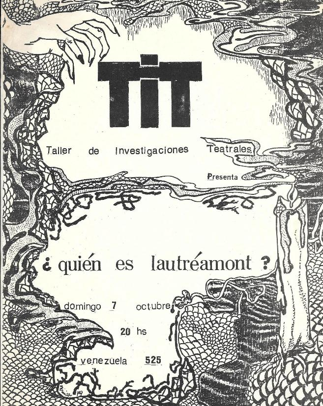 Afiche del montaje, en octubre del '79.A fin de año se montó nuevamente en el marco de Alterarte I con el nombre "Para Lautréamont", contando con la participación de Raúl Zolezzi y Norberto López (abajo, fotos de esa ocasión). 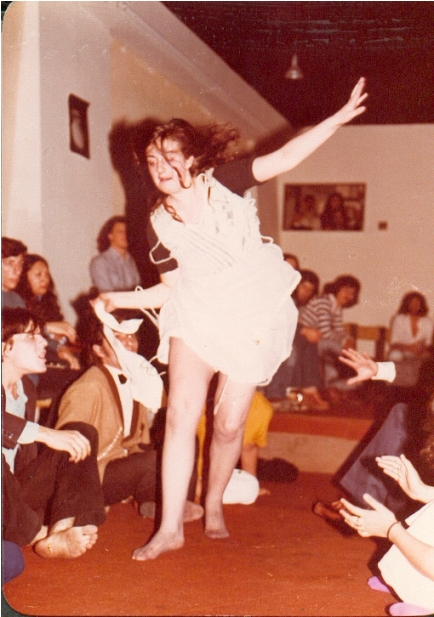 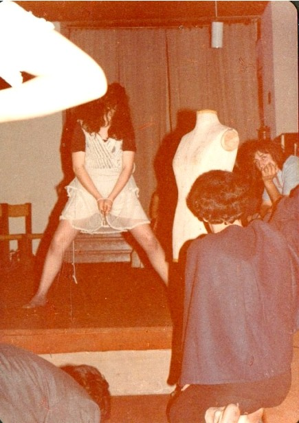 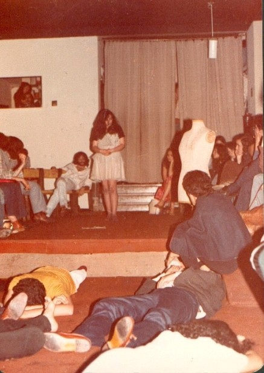 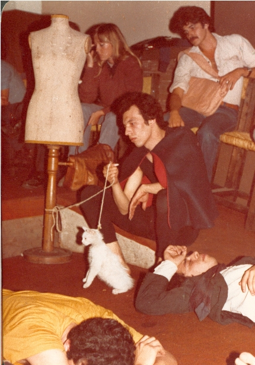 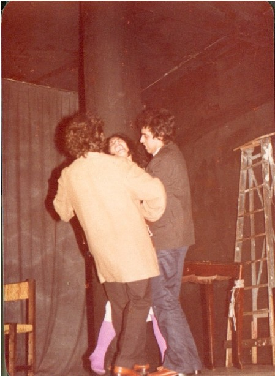 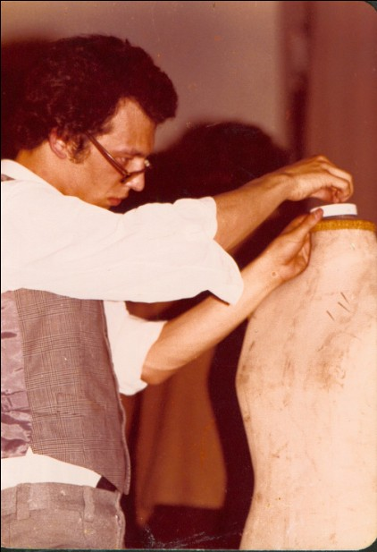 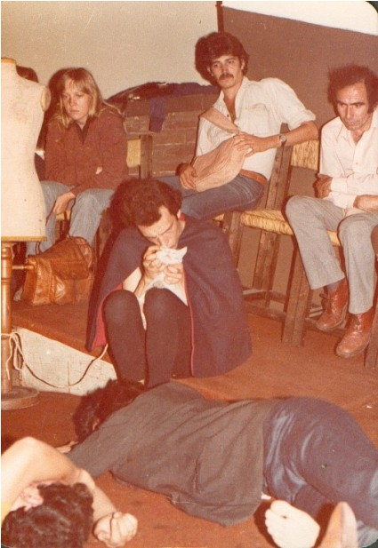 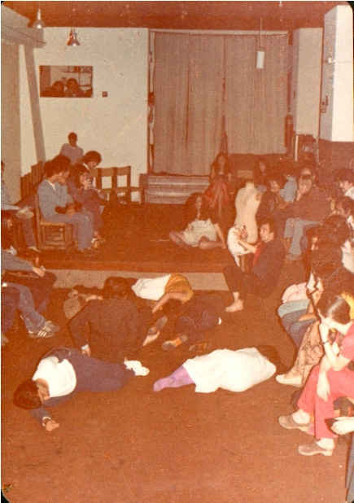 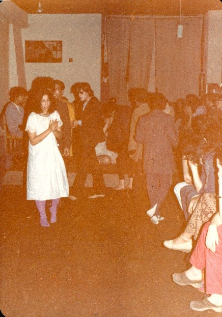 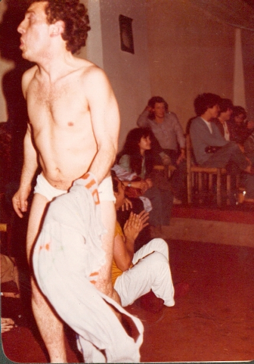
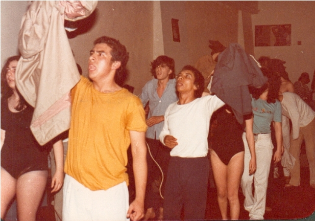
|